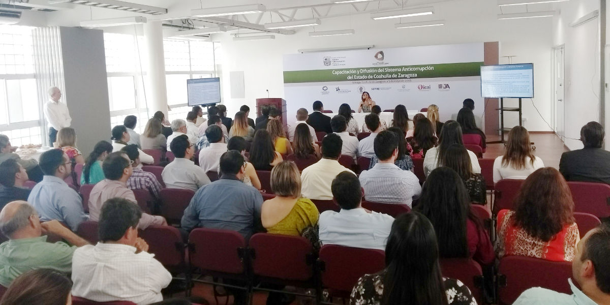
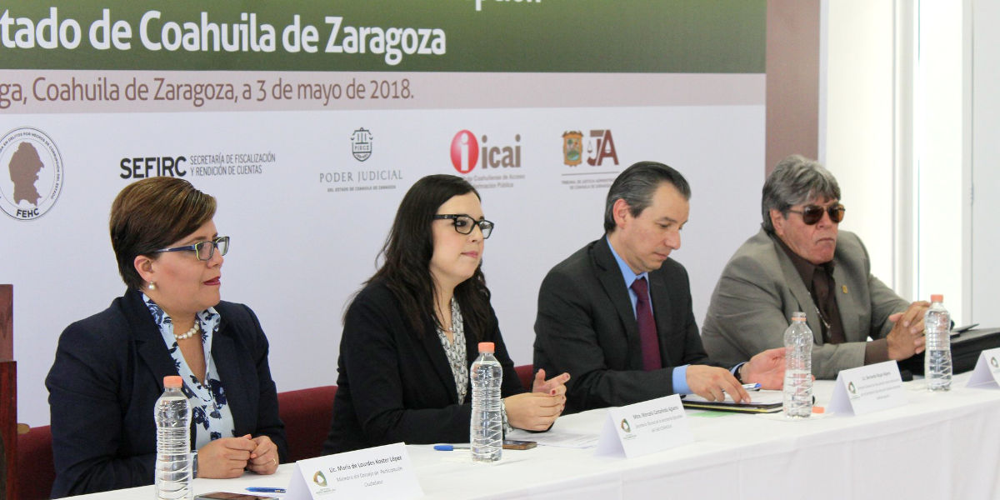
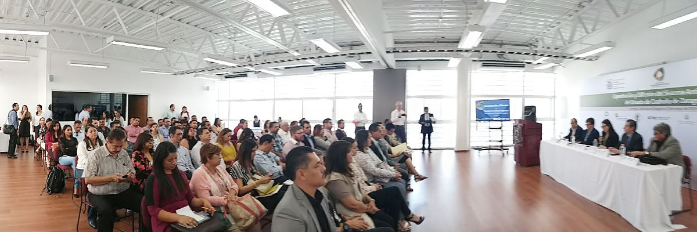

Capacitación y Difusión del Sistema Anticorrupción a Servidores Públicos de la Región Sureste
03 mayo 2018
Inicia la Primera Capacitación y Difusión del Sistema Anticorrupción del Estado de Coahuila de Zaragoza
Saltillo, Coahuila a 03 de mayo de 2018.
El día jueves 03 de mayo de 2018, se da inicio a la Primera Capacitación y Difusión del Sistema Anticorrupción del Estado de Coahuila de Zaragoza, la cual se enmarca en el Programa de Trabajo del Comité Coordinador 2018 del Sistema Anticorrupción del Estado de Coahuila de Zaragoza y que tiene como objetivo la capacitación, promoción y difusión del SAE-Coahuila para las y los servidores públicos de los Entes Públicos, en una primera etapa.
La Capacitación y Difusión del Sistema se llevará a cabo en las cinco regiones del Estado, en esta ocasión los funcionarios de la Región Sureste se dieron cita a en el Aula Millenium "Ing. Cosme Lugo Maltos"" de la Facultad de Ingeniería de la Universidad Autónoma de Coahuila. Campus Arteaga.

Para el arranque de la Primera Capacitación y Difusión del Sistema, se contó con la participación del Lic. Bernardo Rojas Nájera, Director General de Vinculación Interinstitucional de la Secretaría Ejecutiva del Sistema Nacional Anticorrupción, quien abordó el tema de los antecedentes del Sistema Nacional Anticorrupción, así como los avances que Coahuila tiene en la materia.
Asistieron también la M. C. Marcela Castañeda Agüero, Secretaria Técnica de la Secretaría Ejecutiva del Sistema Anticorrupción del Estado; la Lic. Lourdes de Koster López, Miembro del Consejo de Participación Ciudadana; el Lic. Luis González Briseño, Comisionado Presidente del Instituto Coahuilense de Acceso a la Información Pública y el Lic. José de Jesús Centeno Herrera, Abogado General de la Universidad Autónoma de Coahuila.
Los ponentes que participaron fueron:
- Lic. Bernardo Rojas Nájera, con el tema: "El Sistema Nacional Anticorrupción".
- La M. C. Guadalupe Hernandez Bonilla, Titular de la Unidad de Derechos Humanos e Igualdad de Género del Poder Judicial, con el tema: "Anticorrupción, Derechos Humanos y Equidad de Género".
- El M. C. Juan Carlos Cisneros Ruíz, Titular de la Unidad Anticorrupción del Tribunal de Justicia Administrativa con el tema: "Ley General de Responsabilidades Administrativas".
- Lic. Luis Edgar Martínez Cruz, Director de Asuntos Jurídicos de la Auditoria Superior del Estado, con el tema: "Ley de Rendición de Cuentas y Fiscalización Superior del Estado de Coahuila de Zaragoza".
- Lic. Gerardo Alfonzo Zavala de la Peña, Agente del Ministerio Público de la Fiscalía Especializada en Delitos por Hechos de Corrupción, con el tema: "Nueva Tipificación de Delitos por Hechos de Corrupción y sus Sanciones".
- Lic. Reynaldo Rosas Cepeda, Director de Protección de Datos Personales del Instituto Coahuilense de Acceso a Ia Información Pública, con el tema: "Cultura de la Legalidad y la Transparencia".

Los servidores públicos que acudieron a este primer evento provenían de Organismos como: Auditoria Superior del Estado, Comisión Coahuilense de Conciliación y Arbitraje Médico, Comisión de Derechos Humanos del Estado de Coahuila, Instituto Coahuilense de Acceso a la Información Pública, Fiscalía Especializada en Delitos por Hechos de Corrupción, Secretaría Ejecutiva del Sistema Anticorrupción del Estado de Coahuila de Zaragoza, Tribunal de Justicia Administrativa y Universidad Autónoma de Coahuila.
De la Administración Centralizada del Gobierno del Estado acudieron funcionarios de las Secretarías de: Economía y Turismo, Educación, Desarrollo Rural, Inclusión y Desarrollo Social, Infraestructura y Transporte, Medio Ambiente y Desarrollo Urbano, y la Secretaría de Fiscalización y Rendición de Cuentas.
También estuvieron presentes servidores públicos del poder Legislativo y Judicial.
Asistieron funcionarios de los municipios de General Cepeda, Ramos Arizpe y Saltillo, así como de la Dirección de Pensiones y Otros Beneficios Sociales para los Trabajadores del Servicio del Municipio de Saltillo, del Instituto Municipal de Planeación de Saltillo y del Instituto Municipal de Transporte de Saltillo.
